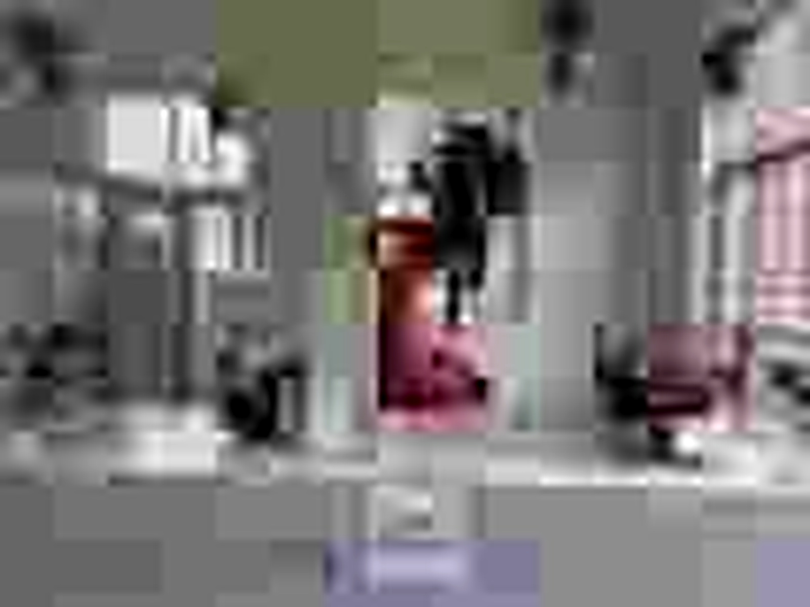
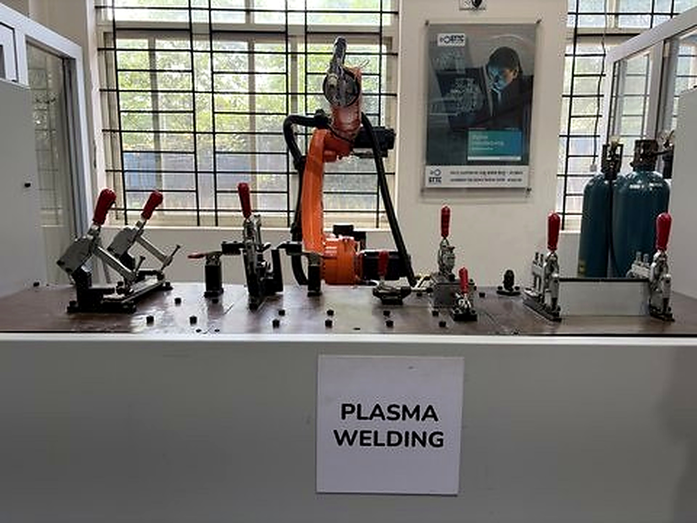
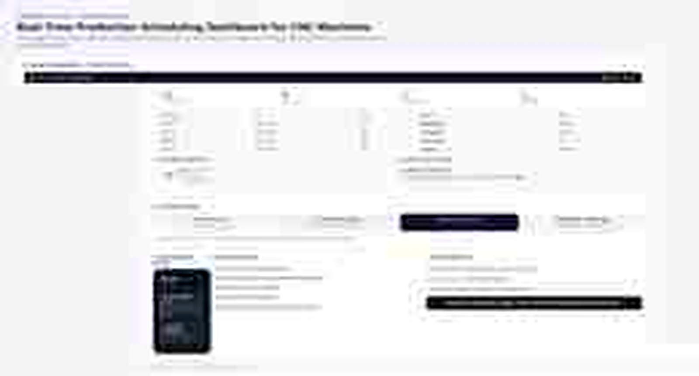
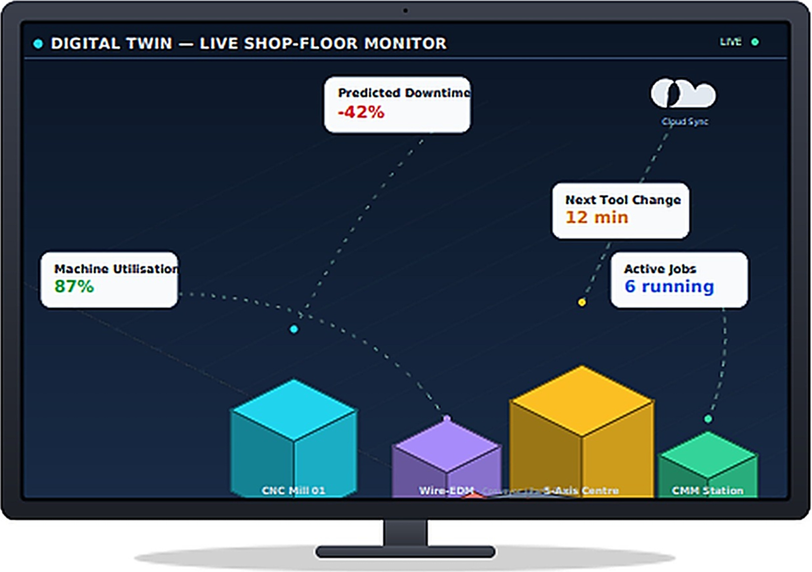

First-year computer science student. I like maths that runs as code.
B.E. · Computer SciencePython & AIBuilding in public
I study CSE at BGS College of Engineering and Technology. I build small AI tools in Python and write up what I learn, like my visit to a real tool room.
Gradient descent rolls the ball downhill: x ← x − η · f′(x). Move the sliders and watch.
Selected explorations
Featured work
A closer look at how I connect classroom concepts, practical observation and interactive ideas. These are learning projects and concepts that show the way I like to explore engineering problems.
∇
01 / INTERACTIVE MATH
MATHEMATICS · PYTHON CONCEPT
Gradient Descent Playground
An interactive way to explore how an optimisation algorithm moves towards a minimum. Adjust the learning rate and starting position, then watch how each update changes the path.
Visualises the loss curve and optimisation steps.
Lets you experiment with different starting points.
Following an industrial visit, I documented manufacturing systems and explored a user-centred concept for clearer production scheduling, machine status visibility and planned tool changes.
Observed automation, robotic welding and CNC processes.
Defined a scheduling and coordination challenge.
Explored a dashboard and a 3D digital-twin concept.
I am a first-year Computer Science and Engineering student at BGS College of Engineering and Technology, studying under VTU, in section CSE-B.
I enjoy seeing an idea work, not only reading it in a textbook. That is why I try to connect what I learn in maths class to code that I can run and test.
I am looking for internships, hackathons and teams where I can learn more about AI and build real things.
My interests sit at the meeting point of programming, applied mathematics and practical problem-solving. I enjoy breaking a topic into smaller ideas, testing those ideas with code, and improving the result when something does not behave as expected.
I am also learning to approach technical work from the user's point of view. My Innovation and Design Thinking work has encouraged me to observe a problem carefully, define the actual need, explore alternatives and communicate a solution clearly before jumping into implementation.
Education
B.E. in Computer Science and EngineeringBGS College of Engineering and Technology, Bengaluru. VTU, first year, 2025 scheme.
What I enjoy exploring
01Code that explains ideas
Small programs and visual experiments that make mathematical or technical concepts easier to understand.
02Practical engineering
Understanding how machines, sensors, automation and people work together in real environments.
03Learning through iteration
Trying an approach, observing the result, finding what can improve and refining it step by step.
Industrial visit report: GTTC, Bengaluru
This is my report for the Innovation and Design Thinking course. We visited a working tool room, watched real machines run, and used the design thinking steps on a real problem we saw there.
Place
Government Tool Room and Training Centre (GTTC), Bengaluru
Course
Innovation and Design Thinking
Date
22 September 2026
Student
V. Raghunandan, CSE-B
Department
Computer Science and Engineering, BGS College of Engineering and Technology
1. Purpose of the visit
The main aim was to see industrial manufacturing first-hand, and to check in a real, unscripted working place how the ideas of Innovation and Design Thinking from our classroom turn into real engineering practice.
We wanted to spot real challenges on an active shop floor, see how experienced technicians and engineers deal with them every day, and think about how user-centred, well-reasoned solutions could answer the friction points we noticed.
The visit also showed us the scale, discipline and precision that modern manufacturing demands. These are hard to understand from lectures, textbooks or lab exercises alone. They become clear when you stand beside the machines and the people who run, maintain and improve them every day.
2. What I observed
At GTTC we were guided through several different manufacturing and automation cells. Together they show how wide modern industrial practice is.
Modular mechatronics and pneumatic automation training line
The first cell was a training line made of five connected work-stations. Each station has pneumatic cylinders, sensors and its own electrical control panel. GTTC uses the line to simulate a real assembly process and to train operators in station sequencing, fault diagnosis and PLC-based control logic before they work on live production equipment.
The five-station training line.
Robotic welding bay
Here we saw two six-axis industrial robot arms. One does spot welding and the other does plasma welding. Each is mounted above a table with interchangeable clamping fixtures. The fixtures hold the parts firmly and in the same position every time, in the exact orientation needed for a consistent, defect-free weld.

Robotic spot-welding station.

Robotic plasma-welding station.
Dynascan optical profile projector
This is a non-contact measuring instrument. It magnifies a part and projects its outline onto a large lit screen. We saw a threaded shaft on it. The profile, thread form and key dimensions can be checked against the engineering drawing without touching the part or risking damage to it.
The projector showing a threaded shaft.
Large CNC gantry milling machine
Finally we saw one of GTTC’s large CNC gantry milling machines cutting a big circular workpiece. Coolant flowed continuously over the cutting zone to control heat and wash away swarf. It gave us a real sense of the scale of equipment used for heavy tooling, die and mould production.
The CNC gantry mill at work.
What struck us most
Every station is very different in function, yet all of them are united by the same discipline of precision and repeatability.
Pneumatic line. Automation is not only about large machines. It is also careful, sensor-driven logic practised at a smaller and safer scale before it is used on the shop floor.
Robotic welding. Good weld quality depends as much on how rigid the clamping fixtures are as on the robot’s programmed path. Even a small misalignment while clamping gives a defective joint.
Optical projector. Checking dimensions does not need to be invasive. A part’s shape can be verified using only projected light and magnified imaging, which protects delicate surfaces while giving very high measurement confidence.
CNC gantry mill. Heat control and chip removal matter as much to final accuracy as the cutting settings. Quality is protected all the time, not only checked at the end.
3. Empathize: who are the users?
The main users we identified at the facility are skilled technicians, CNC machine operators, robotic-cell programmers, tool designers and quality-assurance engineers. Each has a different role, and their roles depend closely on each other so that daily production runs smoothly, safely and to the exact specification the client wants.
Need or challenge we noticed
From talking with the technical staff in the different cells, it was clear that job scheduling and tool changeovers are still managed mostly by hand and with paper job cards. This causes avoidable delays whenever a machine finishes a job earlier or later than planned.
Operators told us they must track work-in-progress parts across many machines by hand, often relying on their own experience and memory and not on a central digital system. This gets harder to manage reliably as the number of jobs on the floor grows.
Coordinating part documents and inspection reports between designers, machine operators and the quality team also takes a lot of time and effort. In our observation it is a repeated point of friction that lowers efficiency and slows down supervisors when an unplanned stoppage happens.
4. Define: the problem we identified
How might we…?
How might we design and build an automated production-scheduling system that clearly cuts tool changeover time and improves machine use in every cell we saw, while keeping the very high precision standards the clients depend on?
This covers the pneumatic training line, the robotic welding stations and the CNC gantry mills.
Why this problem is important
Scheduling problems directly affect production cost and delivery time. Idle time between jobs lowers the factory’s output and raises the cost of each unit made.
A smarter, data-driven way of scheduling would let GTTC accept more client work and deliver precision parts, such as welded assemblies and machined tooling, much faster. That makes it more competitive against other manufacturing partners.
For us as engineering students, it also shows why improving workflow is such an important idea for a future career in manufacturing and industrial systems design. Even the most advanced machine gives little value if it sits idle between jobs.
5. Ideate: our idea
Our proposed solution
We propose a real-time production scheduling dashboard. It connects directly to the CNC machine controllers, the robotic welding cells and the pneumatic training line’s PLC network. It keeps track of job status, tool and fixture changes, and how much each machine is used across the whole shop floor.
Live data from each machine and robotic cell is collected through an IoT interface and sent to a cloud or local server. The server sequences upcoming jobs by priority and deadline, and warns about a coming tool change or fixture swap before it can cause an unplanned stop.
Technicians and supervisors see all this on a central dashboard and get mobile alerts when a tool change is due, a weld fixture must be reset, or a new job is assigned. Changeovers can then be planned well ahead and not discovered in the middle of a shift, when they cause the most disruption.
Key benefit
Replacing manual, memory-based tracking with a live, automatic schedule should greatly reduce idle time between jobs. It gives technicians early warning of tool and fixture changes, and makes it much easier for supervisors to watch, judge and keep improving how well machines and robotic cells are used.
Saves time
Reduces cost
Improves usability
Improves safety
Reduces waste
Prototype idea 1: desktop dashboard
Our first direction is a browser-based dashboard that a supervisor keeps open all through the shift. Four summary counters across the top give a quick picture of the day’s work: total jobs scheduled, how many are in progress, how many are done and how many are still pending. A supervisor does not need to dig through paperwork to see how the shift is going.
Below this, a live job table lists every machine with its current part number, the tool it is running, a colour-coded status such as “In Progress” or “Tool Change”, and an estimated finish time. One look shows where attention is needed. A panel shows machine utilisation as a simple percentage split between running, idle and maintenance time. A neighbouring alert box shows the next tool change that is due and counts down the minutes, so the technician can prepare in advance.
Underneath, a simple system-flow diagram shows how data travels from each CNC machine and robotic cell, through an IoT interface, into a cloud or local server that processes and optimises the schedule, and then out to the dashboard and a companion mobile app. A short list of key features and benefits explains in plain language why automatic scheduling and real-time monitoring saves time, cuts cost and makes the shop floor easier to manage.

Concept 1: desktop view of the real-time production scheduling dashboard for CNC machines and robotic welding cells.
Prototype idea 2: 3-D digital twin
As a second direction, we imagined the same live data shown not as a flat table but as a 3-D digital-twin view on a large monitor fixed on the shop floor, where anyone walking past can see it from a distance. Each CNC machine, the wire-EDM unit, the robotic welding cells and the CMM inspection station is drawn as a simple colour-coded 3-D block. The colour shows the status at once (running, idle, tool change or maintenance) without anyone reading a word.
Key numbers such as machine utilisation, predicted downtime, the time left until the next tool change and the number of active jobs float beside the models as small cards, joined by thin guide lines to the machine they describe. A supervisor walking through can see from across the room which station needs attention next.
We felt this idea would be especially useful in busy shifts and for new supervisors who do not yet know every machine’s position and job code. A simple colour-coded 3-D layout is far faster to read under pressure than scrolling through rows of a table.

Concept 2: 3-D digital-twin live monitoring display, shown on a shop-floor monitor.
6. Design thinking learning
Empathize. We listened patiently to technicians and operators in every cell, to understand their daily manual workflows, the time pressure in a shift, and the coordination problems between the stages of production, from first job assignment to final inspection.
Define. After thinking over everything we saw, we recognised that scheduling inefficiency is the real core problem behind much of the friction on the shop floor. It is not something to accept as a normal part of how factories have always worked.
Ideate. We weighed several scheduling approaches (priority-based, time-based and efficiency-based), discussed the trade-offs of each, and settled on a combined, data-driven solution that suits the mix of CNC machining, robotic welding and pneumatic-line work we saw.
Prototype. We sketched the dashboard concept, both the table view and the 3-D digital-twin view, in enough detail for real operators to react to. The aim is to get useful feedback before spending significant time or resources on full development.
Test. The plan is to measure the improvement in production time, machine utilisation and cost savings under real factory conditions over a long trial, so the real-world result can be judged honestly before any wider roll-out.
7. My key takeaway
One important thing I learned from the visit
Lasting success in precision manufacturing comes from a culture of continuous improvement, not from one dramatic breakthrough. Design Thinking proves its value in a factory because it makes you understand the real user and not make convenient assumptions about the problem.
At GTTC, in every cell we visited, the strongest and most workable solutions came from listening carefully to experienced technicians, who already know exactly where the real bottlenecks are. This reinforced my view that technology alone does not solve problems. Technology that is deliberately designed around real user empathy does.
How I will use this in future projects
I will apply user-centred design thinking from the very start of any project. Before writing a single line of code or drawing a first design, I will take time to understand who will use the solution and what problems they really face in their daily work, the same way we questioned the GTTC technicians about their scheduling and documentation difficulties.
I plan to prototype early, get feedback from real users instead of assuming I know their needs, and improve step by step. The empathize, define, ideate, prototype and test cycle, which we studied in theory and then saw in practice on this visit, will be a core part of how I approach my own design and engineering work.
8. Conclusion
The visit to GTTC showed clearly and practically that real innovation begins with carefully watching real problems on the ground, understanding the people affected, framing the right problem statement, and only then working step by step towards a practical and sustainable solution.
Across the mechatronics training line, the robotic spot- and plasma-welding cells, the optical measuring station and the large CNC gantry mill, we saw again and again how precision, repeatability and continuous quality checks support every successful process. Overall, the visit connected the theory from our Innovation and Design Thinking course with real engineering practice, and left us with a much deeper respect for the discipline, patience and precision that modern manufacturing demands of everyone involved.
V. Raghunandan, 22 September 2026
Skills
Language
Python
Data and machine learning
NumPy, pandas, scikit-learn, Matplotlib
Building apps
Streamlit, Git and GitHub
Maths
Calculus, linear algebra, gradient descent, probability basics
Ways of working
Design thinking: empathize, define, ideate, prototype, test
I am developing a foundation across programming, mathematics and engineering. The areas below reflect the subjects and tools I am currently learning and practising.
Coursework this year
Python Programming
Calculus and Linear Algebra
Applied Chemistry for Smart Systems
Introduction to AI
Innovation and Design Thinking
Contact
The best way to reach me is email. I am open to thoughtful conversations about student projects, learning opportunities, hackathons and collaborative ideas.